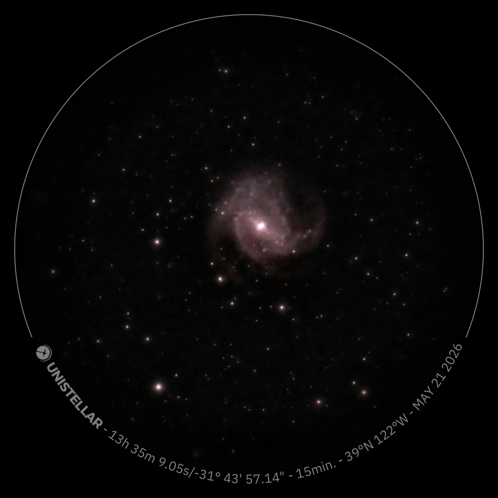
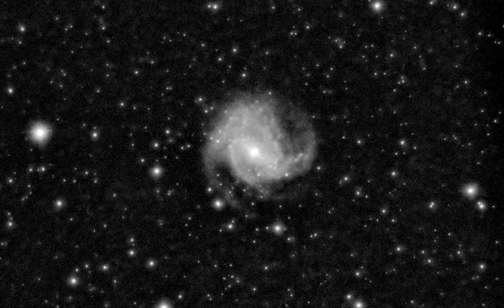
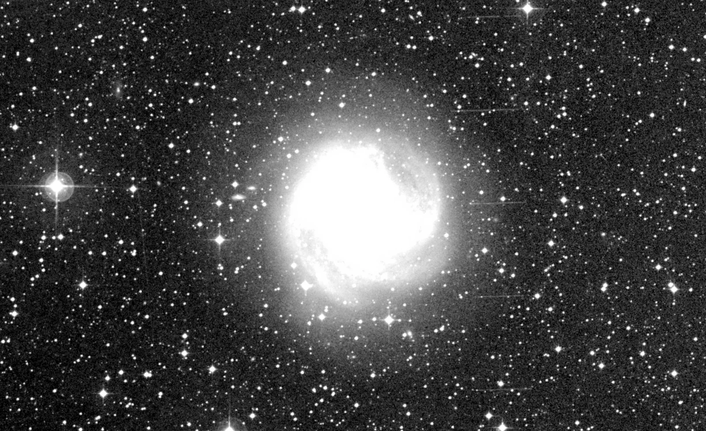

- Constellation
- Hydra
- Observed
- May 21, 2026
- Exposure
- 15 minutes, stacked
- Telescope
- Unistellar eVscope 2
No new star
No new star. Two hundred stars matched the survey one for one, the most of any galaxy on the list, because the survey image for M83 covers the whole of my frame.
Everything left over lies inside the galaxy’s bright disk, which is burned out on the survey plate. M83 never rises higher than about twenty degrees above the horizon from Sacramento, so this image was taken through a long, thick path of air.
The blink
Drag the slider or press Blink to compare my frame with the survey.


Survey images: Digitized Sky Survey (DSS2 Red), Space Telescope Science Institute / NASA, from the Palomar Oschin and UK Schmidt telescopes; displayed through the CDS Aladin HiPS service.